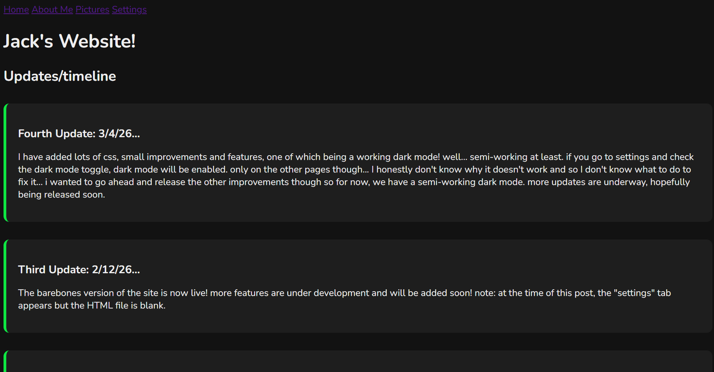
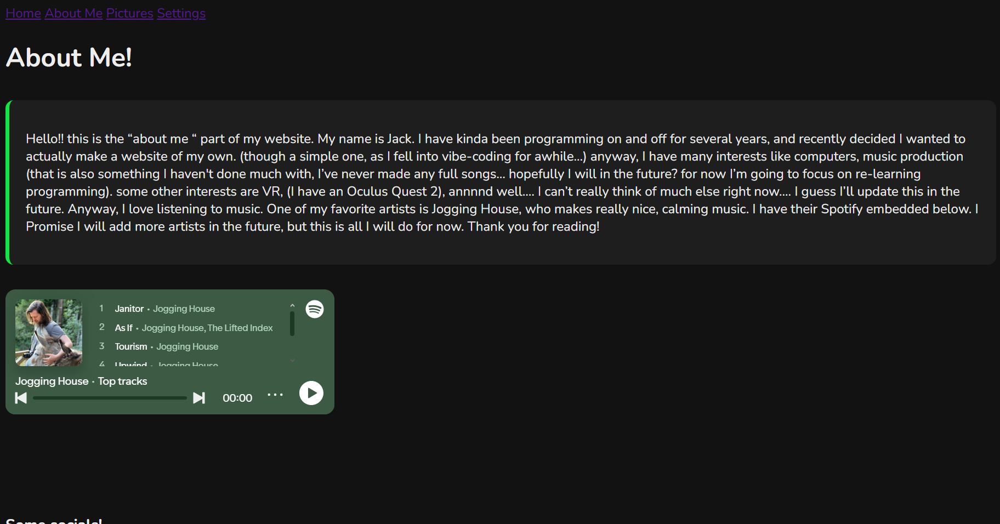
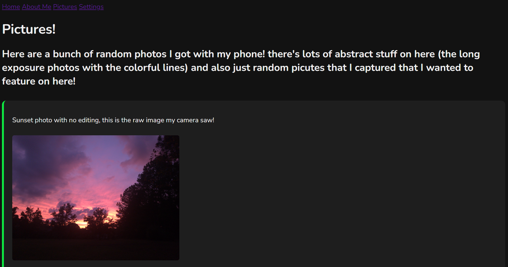
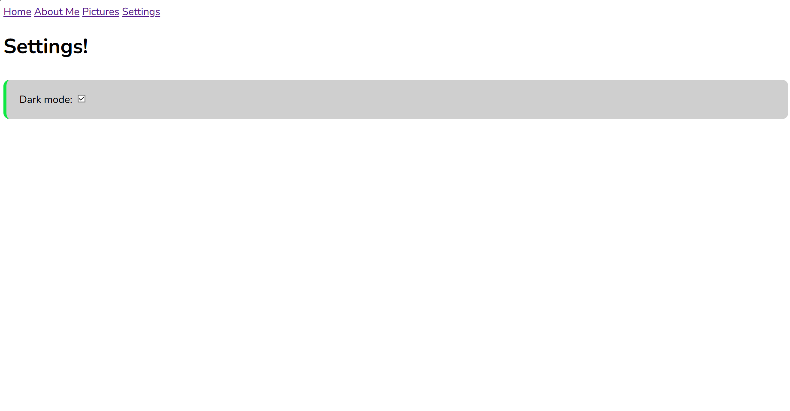

Fourth Update: 3/4/26...
I have added lots of css, small improvements and features, one of which being a working dark mode! well... semi-working at least. if you go to settings and check the dark mode toggle, dark mode will be enabled. only on the other pages though... I honestly don't know why it doesn't work and so I don't know what to do to fix it... i wanted to go ahead and release the other improvements though so for now, we have a semi-working dark mode. more updates are underway, hopefully being released soon.



